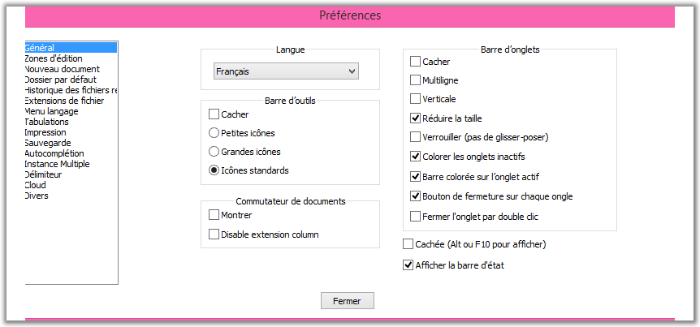

preferencias
Puede configurar muchos aspectos de Notepad ++ utilizando el cuadro de diálogo "Preferencias" . El cuadro de diálogo consta de varias pestañas que contienen opciones que son relevantes para ciertos aspectos de Notepad ++
(por ejemplo, la interfaz o las opciones de copia de seguridad).

La configuración general le permite controlar la apariencia de la interfaz principal. Puede controlar la barra de pestañas, la barra de herramientas, la barra de estado y el menú desde aquí, así como también el idioma de la interfaz.
- Localización:
- Esta lista desplegable muestra todos los idiomas que puede usar para Notepad ++ para hablar su idioma. Si hace clic en uno de estos idiomas, todos los elementos de la interfaz de usuario se traducen inmediatamente a ese idioma. archivos de localización están en la ubicación conservs subcarpeta \ localización de Notepad ++ .
- Barra de herramientas:
- Ocultar - Oculta completamente la barra de herramientas:.
- Las siguientes opciones dan un resultado inmediato, pero a veces es necesario reiniciar para cargar correctamente los íconos.
- Iconos pequeños : Notepad ++ utiliza pequeños iconos para la barra de herramientas. Esto puede ser para iconos estándar o iconos personalizados.
- Iconos grandes : Notepad ++ usa iconos grandes para la barra de herramientas. Esto puede ser para iconos estándar o iconos personalizados.
- Iconos estándar : estos son los iconos integrados predeterminados. Esta es también la única opción que se puede usar para iconos de complementos en la barra de herramientas.
- Barra de menú:
- Ocultar - Si marca esta opción, la barra de menú se oculta automáticamente. Para mostrar temporalmente la barra de menú, presione la tecla Alt o la tecla F10 . Seleccionar una opción, la tecla Escape o seleccionar otra ventana ocultará el menú nuevamente.
- Barra de estado:
- Mostrar barra de estado : marque para mostrar la barra de estado.
- Interruptor de documento:
- Determina cómo se muestra el cambiador vertical de documentos:
- Mostrar : muestra el interruptor
- Ocultar columna de extensión : de forma predeterminada, las extensiones se muestran en una columna separada a la derecha. La columna puede estar oculta.
- barra de pestañas:
- Ocultar - Si marca esta opción, la barra de pestañas estará oculta. Todavía puede abrir varios documentos, pero tendrá que pasar por los atajos de teclado en lugar de usar la barra de pestañas.
- Línea múltiple : si marca esta opción, las pestañas que no se ajustan a la longitud en la barra de pestañas serán visibles en las siguientes líneas. De lo contrario, dos botones de flecha le permiten desplazarse por las pestañas. Tenga en cuenta que el documento activo siempre estará en la fila inferior.
- Vertical : marque esta opción para una rotación de 90 a la izquierda de la etiqueta de la pestaña de la barra y el movimiento hacia el lado izquierdo de la pantalla.
- Reducir tamaño : adapta la fuente y los iconos para que la cantidad máxima de información en la pestaña sea visible.
- Bloquear (no arrastrar y soltar) : desactiva la capacidad de ordenar documentos arrastrando pestañas.
- Pestañas de color inactivo : si esta opción está habilitada, las pestañas inactivas tendrán un color de fondo particular (consulte: Parámetros, Configurador de resaltado ).
- Barra de color en la pestaña activa : si selecciona esta casilla de verificación, la pestaña activa de la vista activa tendrá una línea coloreada (de forma predeterminada, vea Configurador de resaltado de sintaxis de parámetros
).
- Botón Cerrar en cada pestaña : esta opción agrega un botón de cerrar en cada pestaña para cerrar el documento en ejecución.
- Cerrar pestaña de doble clic : si está marcada, al hacer doble clic, se cierra la pestaña.
Área de edición
Ces param�tres affectent le comportement et l'apparence de Scintilla, l'outil d'�dition utilis� par Notepad++.
- Param�tres du curseur :
- Largeur - D�finit la largeur en pixels du curseur, ou le transforme en un bloc
qui est de la taille du caract�re en cours (si imprimable, sinon de la taille d'un espace).
- Clignotement - Variation de vitesse (R) pour ralentir (L) pour
augmenter (entre non visible et toujours allum�).
Vous pouvez changer la couleur du curseur
(Configurateur de coloration syntaxique).
- Multi-�dition
- Vous pouvez activer ou d�sactiver cette fonctionnalit� gr�ce � la case � cocher. Vous
pourrez s�lectionner des zones non contigu�s (voir S�lection de texte )
et rechercher un texte dans toutes les parties de la s�lection.
- Style de la marge d'escamotage
- Le style des ic�nes qui indiquent le statut de pliage (Voir
plier/d�plier ). Choisissez parmi les 4 types propos�s, ou Aucun pour d�sactiver l'escamotage.
- Largeur des lignes
- Afficher la marge Droite -
Activer cette option tracera un trait vertical � travers le document � l'emplacement voulu.
- Mode.
- Afficher un filet vertical - Si
s�lectionn�, le bord sera mat�rialis� en utilisant une ligne en arri�re-plan
- Colorer l'arri�re plan - Si s�lectionn�, le bord sera mat�rialis� en changeant
la couleur de fond des caract�res au del� du bord. Vous pouvez changer la couleur avec le
configurateur de colorisation syntaxique .
- Nombre de colonnes : La distance en colonnes (d�termin�e par la taille
de l'espace) � laquelle le bord sera mat�rialis�.
- Autres options
- Afficher
la num�rotation des lignes - Si elle est coch�e, les num�ros de ligne seront
visible. Vous pouvez changer la couleur avec le Configurateur de coloration syntaxique . Lorsqu'elle
est visible, la num�rotation peut accueillir trois chiffres, et s'�largira
si n�cessaire pour afficher des nombres de plus grande longueur.
- Afficher la marge des signets - Si elle est coch�e, la marge des signets sera
visible.
- Surligner la ligne courante
- Si elle est coch�e, la ligne � laquelle le curseur est pr�sent sera
visible avec une couleur de fond sp�ciale que vous pouvez modifier avec
le Configurateur de coloration syntaxique.
- D�sactiver le d�filement intelligent (si vous avez un probl�me de Touchpad)
- Certains pilotes syst�me s'interposent entre l'utilisateur et le composant Scintilla, emp�chant celui-ci de r�agir.
Ne cochez cette case que si vous n'arrivez pas � ufaire d�filer le texte avec la molette de la souris - le probl�me appara�t plut�t sur les portables.
- Le curseur Border width contr�le la largeur de la fronti�re de la zone d'�dition, qui est aussi la distance entre l'onglet et le texte �dit�. Sa valeur en pixels s'affiche � droite du curseur.
En fonction de la r�solution de votre �cran, vous pouvez ajuster ce param�tre pour am"liorer la lisibilit� ou augmenter l'espace disponible.
Nouveau document
Ces options changent la fa�on de cr�er les nouveaux documents.
- Nouveau document:
- Encodage : Permet de choisir l'encodage
par d�faut � utiliser (voir encodage ).
- Format des sauts de ligne : permet de choisir quel est le format de saut de
ligne utilis� par d�faut (voir Format Saut � la ligne ).
- Langage par d�faut : d�finit quelle coloration syntaxique sera utilis�e pour tout document
nouvellement cr��. S�lectionne la bonne occurrence dans le menu Langage. Les langages d�finis par l'utilisateur
et les langages externes ne peuvent pas �tre s�lectionn�s.
R�pertoire par d�faut
- Dossier par d�faut (Ouvrir / Enregistrer):
- Ce param�tre contr�le le r�pertoire propos� par Notepad++ � chaque utilisation des boites de dialogues Ouvrir / enregistrer.
Il est � noter que le r�pertoire par d�faut n'est pas le m�me que le r�pertoire courant (r�pertoire de travail) de Notepad++.
- Utiliser celui du document actuel - Si cette option est s�lectionn�e, le r�pertoire par d�faut
sera le r�pertoire du fichier actuellement actif. Si le fichier est un nouveau document non enregistr�, ce sera le r�pertoire de
travail de Notepad++.
- M�moriser le dernier r�pertoire s�lectionn� - Si cette option est s�lectionn�e, le r�pertoire par d�faut sera
d'abord le r�pertoire o� Notepad++ a �t� lanc� (vous pouvez le contr�ler en ajustant le raccourci que vous utilisez pour
Notepad++), en suivant le r�pertoire affich� dans les boites de dialogues Ouvrir / Enregistrer.
- - Le r�pertoire par d�faut peut �tre configur� pour un chemin
d'acc�s donn�, saisi dans la zone de texte contigu� ou par le bouton Parcourir ... .
Si le chemin n'est plus valide, le r�pertoire de travail de Notepad++ sera utilis�. Vous �tes autoris� � utiliser
des variables d'environnement, en utilisant la syntaxe %var-name% des fichiers batch.
- Historique des fichiers r�cents :
- Le nombre maximum de fichiers r�cents - N'importe quel nombre de 0 � 30.
Contr�le le nombre de fichiers qui sont enregistr�s dans l'historique. 0 d�sactive l'enregistrement.
- Ne pas v�rifier au lancement - Si elle est coch�e, Notepad++ ne v�rifiera
pas la validit� des fichiers de l'historique. Si elle est d�coch�e, Notepad++ va v�rifier l'existence de chaque fichier.
Cette option est recommand�e � l'activation dans le cas d'utilisation de fichiers en r�seau.
- In Submenu : Quand cette case est coch�e, la liste se pr�sente � partir d'un sous-menu de .
Sinon, la liste est ins�r�e sous forme d'entr�es suppl�mentaires vers le bas de .
- Only File name : Avec cette option, la liste des fichiers r�cents ne montre que les noms de fichier, sans leur chemin.
- Full File Name Path : Avec cette option, la liste des fichiers r�cents montre les noms complets des fichiers, avec l'int�gralit� de leur chemin.
- Customize maximum length : Semblable � l'option pr�c�dente, mais les noms complets de fichier
sont tronqu�s s'ils sont trop longs. En activant le bouton, il appara�t un lien avec la longueur maximale applicable (100 par d�faut).
Ce param�tre peut �tre modifi� en cliquant le lien.
Association de fichier
Vous pouvez associer des fichiers � Notepad++, pour qu'il d�marre � l'ouverture de ces fichiers.
S�lectionnez un type de fichier, puis s�lectionnez l'extension d�sir�e et appuyez sur -> pour associer le fichier. Pour ajouter
un type personnalis� de fichier, s�lectionnez Personnaliser, entrez l'extension et appuyez sur le ->
Pour supprimer l'association, s�lectionnez l'extension � dissocier et appuyez sur <- .
Menu Langage
Vous pouvez s�lectionner les langages qui sont disponibles dans le menu .
Dans les langages disponibles de la liste figurent les langages qui sont actuellement visibles.
Pour masquer un langage dans le menu, s�lectionnez-le et appuyez sur le bouton > pour le transf�rer vers les �l�ments cach�s. Pour le faire r�apparaitre, s�lectionnez-le dans la liste des langages cach�s
et transf�rez-le vers les langages visibles en appuyant sur le bouton < .
L'aspect du menu des langages peut �tre encore contr�l� par la case � cocher
Compacter les langages . Quand elle est coch�e, les langages dont les noms commencent par la m�me lettre
sont regroup�es dans un sous-menu, au lieu d'�tre tous pr�sents dans le menu lui-m�me.
Tabulations
Les param�tres de tabulation peuvent �tre ajust�s langage par langage. La liste de droite a tous les langages pr�d�finis, ainsi que
l'item [default] (par d�faut). Ce dernier s'applique � tous les langages qui n'ont pas un param�tre sp�cifique, ainsi qu'� tous
les langages d�finis par l'utilisateur. Le cadre au dessous permet le r�glage des param�tres de tabulation pour le langage s�lectionn�:
- Taille des tabulations - Taille en caract�res espace d'un caract�re de tabulation dans le document.
- Remplacer par des espaces - La tabulation se fera au moyen d'espaces et non pas du caract�re
Tab. Le nombre d'espaces utilis�s d�pend de l'option pr�c�dente.
Imprimer
Utilisez ces param�tres pour ajuster la mise en page et les couleurs utilis�es pour imprimer un document, ainsi que
l'en-t�te et le pied de page. Ceux-ci peut �tre n'importe quelle cha�ne ordinaire ou une variable qui va changer en fonction du document imprim�.
- Imprimer la num�rotation des lignes - Si l'option est s�lectionn�e, la num�rotation sera imprim�e aussi.
- Option couleur:
- Tel qu'� l'�cran - couleurs d'impression exactement comme elles sont sur l'�cran.
- Inverser - Impression du document avec une couleur de fond invers�
(blanc devient noir par exemple, et vice versa) et la couleur de premier plan par d�faut invers�.
Toutes les autres couleurs resteront les m�mes.
- Noir et blanc - Tous les textes seront imprim�s en noir sur fond blanc.
- Aucune couleur de fond -
Tout les textes gardent leurs couleurs, mais les couleurs de fond (y compris la couleur par d�faut) seront imprim�es en blanc.
- Variables
- Vous pouvez utiliser des variables dans l'en-t�te/pied de page. Il y a d'origine des variables �num�r�es renseign�es par d�faut,
mais vous pouvez �galement utiliser n'importe quelle variable utilis�e par la bo�te de dialogue Ex�cuter (voir
commandes ). La syntaxe est la m�me. Pour ajouter une variable pr�d�finie dans le menu d�roulant, cliquez sur
Ajouter . Le nom sera automatiquement copi� dans la zone pr�alablement s�lectionn�e.
- En-t�te:
- Contr�le le texte d'en-t�te. Si n'importe quel texte en-t�te est pr�sent, il sera s�par� du document par une ligne.
Utilisez les diff�rents contr�les d'�dition de modification de texte ajout� � l'en-t�te. Vous pouvez ajouter du texte dans
l'en-t�te de gauche, de droite et du centre. Vous pouvez chosir une police de caract�re sp�cifique pour l'en-t�te.
- Pied de page:
- Contr�le le texte de bas de page. M�mes fonctionnalit�s que pour l'en-t�te.
Sauvegarde
- Sauvegarde :
Contr�le le comportement de sauvegarde. Vous pouvez
effectuer une sauvegarde automatique de chaque fichier modifi� dans Notepad++.
En outre, les deux options suivantes peuvent �tre utilis�es:
- Se souvenir de la session en cours pour le lancement prochain - Si l'option est coch�e,
l'ensemble des dossiers ouverts dans Notepad++ sera ouvert � nouveau lorsque Notepad++ sera rouvert.
- Sauvegardes et enregistrements de session p�riodiques
Si cette case est coch�e, Notepad++ stockera � intervalles r�guliers le contenu de tous les documents ouverts
(sauvegard�s ou non) des deux vues ainsi qu'un fichier de session les d�crivant.
Cet �tat sera restaur� � la r�ouverture. Le nombre de seconde s�marant les instantan�s
peut �tre renseign� sous forme d'un nombre entier (7 par d�faut).
Les options suivantes concernent les copies de sauvegarde lors d'un enregistrement:
- Aucun - Pas de sauvegardes .
- Simple sauvegarde - Une sauvegarde est enregistr�e dans un fichier portant le m�me nom et
l'extension .bak est ajout�e (l'extension d'origine est pr�serv�e).
- sauvegarde D�taill�e - m�me utilisation que l'option simple mais .bak est
remplac� par un horodatage.
- Dossier sp�cifique - Si elle est coch�e, un r�pertoire de sauvegarde
personnalis� est utilis� au lieu de sauver dans le m�me r�pertoire que le fichier
d'origine.
Saisie semi-automatique
- L'auto-compl�tion:
Voir saisie semi-automatique pour une explication du dispositif.
- Activer Auto-compl�tion - Si elle est coch�e, Notepad++ va essayer de compl�ter le mot courant � partir des
caract�re d�j� �crits.
- Compl�tion de fonction: essayer de compl�ter le mot courant en utilisant la liste
des fonctions du langage courant.
- Compl�tion de mot : essayer de compl�ter le mot courant en utilisant les mots dans le document.
- Compl�tion de fonction et de mot : essayer de compl�ter le mot courant en utilisant les mots dans le document et les fonctions du langage.
- � Partir du .. caract�re saisi Entrez le nombre de caract�res n�cessaires avant que
Notepad++ tente de compl�ter le mot en cours de frappe. Les valeurs autoris�es vont de 1 � 9.
- Param�tres affich�s durant la saisie - Si l'option est coch�e, quand un
masque est ajout� qui marque le d�but d'une liste d'arguments de fonction
en cours de saisie, les param�tres de la fonction seront montr�s dans une info-bulle.
- Auto-completion des d�limiteurs usuels, en cochant les cses correspondantes ( () [] {} '' "" ).
Possibilit� d'ajouter jusqu'� trois paires suppl�mentaitres.
Divers
Ces param�tres contr�lent d'autres aspects de Notepad++.
- Commutateur de Document
- Activer - Pour activer le s�lecteur de document.
- Activer la liste MRU - Gouverne l'ordre des fichiers dans le s�lecteur de document.
- Coloriage automatique
-
Quand cette option est activ�e,
toutes les occurrences du mot qui correspond � la s�lection active en ce moment � l'�cran sera en surbrillance. Vous pouvez contr�ler
la couleur en utilisant le Configurateur de coloration syntaxique.
- Activer le coloriage automatique - Pour activer la fo,ctionnalit�.
- Respecter la casse - Par d�faut, toutes les occurences sont colori�es quelle qu'en soit la capitalisation.
On peut ainsi limiter le nombre d'�l�ments marqu�s, rendant l'affichage plus clair.
- Param�trage des liens cliquables :
Cette option rend les adresses web cliquables (tous protocoles).
L'adresse s'ouvre alors dans votre navigateur par double clic,
s'il est correctement install�.
- Activer - Si elle est activ�e, les adresses <protocole>:// sont cliquables d�s
qu'ils ont �t� saisis et que le caret n'est plus dessus.
- Pas de soulignement - Si elle est activ�e, cette option �limine
le soulignement standard des liens hypertexte.
- Auto-d�tection de statut des fichiers:
V�rifie automatiquement l'�tat de chaque fichier ouvert lorsque Notepad++ est activ� depuis l'arri�re-plan.
- D�tection automatique - V�rifier l'�tat pour permettre la d�tection.
- Mise � jour sans alerte - Si un changement dans un fichier est d�tect�
(modification de contenu), Notepad++ va effectuer le rechargement du fichier sans alerte.
- Aller � la derni�re ligne, apr�s mise � jour - Si elle est coch�e, lorsqu'un
fichier est recharg� apr�s d�tection d'une modification externe, il d�filera jusqu'� la derni�re ligne
(utile pour les fichiers log).
- Surligner les �l�ments:
L'�l�ment est
l'unit� de base pour souligner les langages XML / HTML. Lorsque le curseur est situ� sur une balise ou � l'int�rieur d'un �l�ment,
l'entr�e �l�ment correspondant sera coloris�e. Vous pouvez changer les couleurs en utilisant le
Configurateur de coloration syntaxique.
- Activ� - Cochez pour activer la mise en �vidence des balises.
- les attributs des �l�ments - Si elle est coch�e, les attributs d'un �l�ment seront surlign�s.
- Dans les zones de commentaire / php / asp - Si elle est coch�e, les balises
dans un script php / asp seront surlign�es.
- Cloud
Sur cet onglet, en fonction des comptes distants dont vous disposez, vous pouvez
sauvegarder votre configuration "dans le nuage" plut�t que sur votre ordinateur. Les media pris en compte sont DropBox, OneDrive et GoogleDrive.
- Sessions
- Si une extension est inscrite comme extension pour fichiers session , Notepad++ va
essayer d'ouvrir ces fichiers comme fichiers de session au lieu de fichiers normaux. Cela vous permet de simplement
fournir un fichier de session via la ligne de commande ou toute autre m�thode d'ouverture d'un fichier afin de charger
une session dans Notepad++.
- Autres options
- Activer mise � jour automatique: Si elle est coch�e, Notepad++
tentera de trouver sur une mise � jour au d�marrage. Vous avez la possibilit� de reporter la mise � niveau s'il en trouve une.
- Auto-d�tection de l'encodage: Coch�e par d�faut, cette case autorise ou non
Notepad++ � utiliser des heuristiques de d�tection de l'encodage des fichiers.
Si elle est coch�e, Notepad++
tentera de trouver sur une mise � jour au d�marrage. Vous avez la possibilit� de reporter la mise � niveau s'il en trouve une.
- Auto-indentation - Si elle est coch�e, l'ajout d'une nouvelle ligne se fera
avec le m�me retrait que la pr�c�dente.
- R�duire dans la zone de notifications - Si l'option est coch�e,
la minimisation de Notepad++ ajoutera une ic�ne
� la barre d'�tat syst�me (zone de notification). En cliquant sur
cette ic�ne, Notepad++ reviendra au premier plan.
- Afficher uniquement les noms de fichier dans la barre de titre - Si elle est coch�e, au lieu du
chemin complet vers le fichier actif, c'est le nom du fichier sans le r�pertoire qui sera affich�.
- En SQL, l'antislash est un caract�re d'�chappement - Puisque les diff�rents
dialectes de SQL ont des interpr�tations diff�rentes de l'antislash, vous pouvez en d�cider ici.
Texto original
Sugiere una traducción mejor